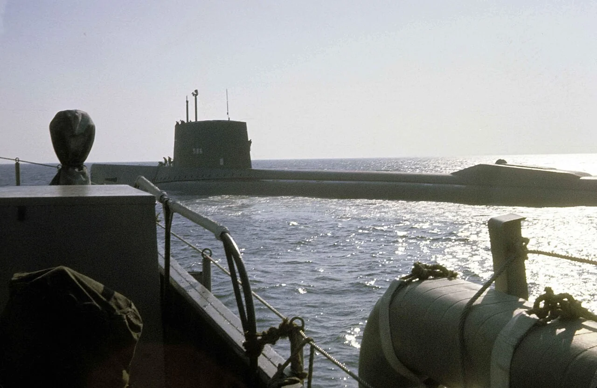
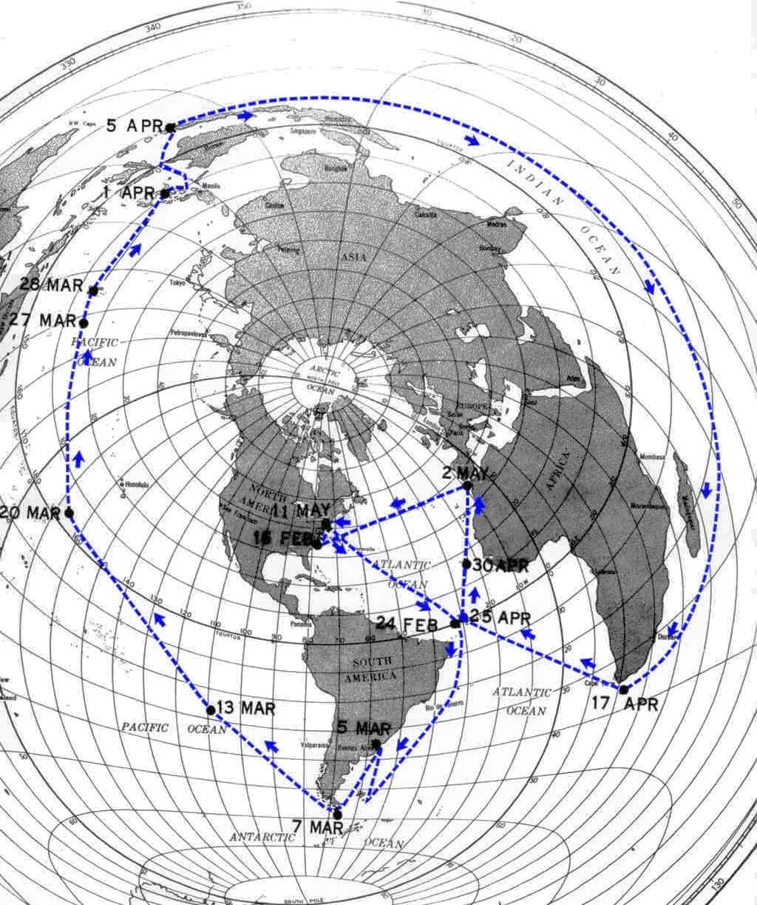
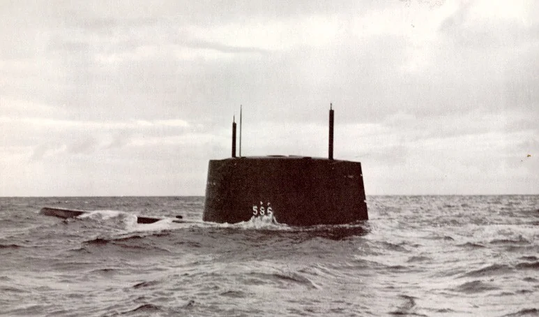
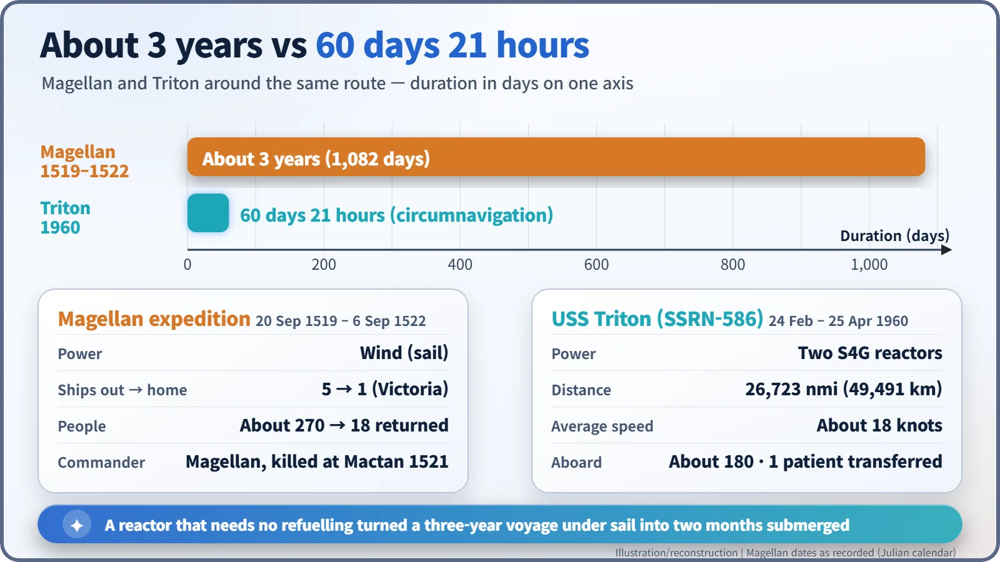
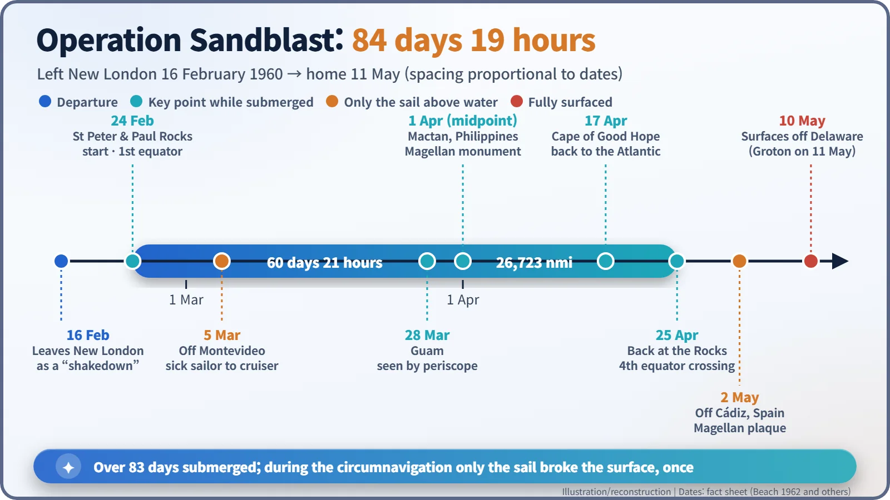

Nuclear History · 158
Magellan's Route, Underwater — USS Triton's Submerged Circumnavigation (1960)
A two-reactor submarine turned Magellan's three-year voyage into a two-month trip under the sea, surfacing its sail only to save a sick sailor.
Between 24 February and 25 April 1960, the nuclear-powered submarine USS Triton sailed 26,723 nautical miles around the world beneath the surface in 60 days and 21 hours, roughly retracing Ferdinand Magellan's route of 1519–1522. Operation Sandblast was meant to show off American technology before a Paris summit, but a downed U-2 spy plane cancelled the celebrations. What lasted was the proof that a reactor, which needs no air, had turned a three-year voyage into a two-month one.
A periscope off Mactan
On 1 April 1960, off Mactan Island in the Philippines, a 19-year-old fisherman named Rufino Baring noticed something odd poking out of the water: a slim mast that turned out to be a periscope. Below it, the crew of the US submarine Triton were looking at a monument on the shore. It marked the place where the explorer Ferdinand Magellan (c. 1480–1521) had been killed 439 years earlier. Triton was following the first route ever sailed around the world, and doing it beneath the surface. Mactan was the halfway point. [4]
A show of strength before a summit
The late 1950s were an anxious time for American prestige. Sputnik in October 1957 had dented the country's sense of technological leadership, and a Four Power summit with the Soviet Union, Britain and France was set to open in Paris on 16 May 1960. In January 1960 Captain Evan P. Aurand proposed a submerged voyage around the world, and President Dwight D. Eisenhower approved it. The code name was Operation Sandblast. The captain's surname was Beach, and, as he later recalled being told, "Most beaches are full of sand." [4]
The ship was USS Triton (SSRN-586), commissioned on 10 November 1959. At 136 m long and about 7,770 tons submerged, she was the largest submarine in the world at the time, and the only US submarine ever commissioned with two reactors (S4G pressurised-water units). Her intended job was radar picket: steaming ahead of a fleet to spot incoming aircraft, which demanded speed. Her commanding officer was Captain Edward L. Beach Jr. (1918–2002). [5]

"Around the world, nonstop"
Triton left New London, Connecticut, on 16 February 1960. Some accounts give the 15th, but that was the day of a final equipment check at sea. Officially this was a shakedown cruise. Only the next day did Beach tell the crew: "We are going to go around the world, nonstop." On 24 February she passed St Peter and Paul Rocks, a speck of rock in the mid-Atlantic off Brazil, and the circumnavigation officially began. [2]
The track ran around Cape Horn into the Pacific, past Easter Island and Guam, through the straits of the Philippines and Indonesia into the Indian Ocean, then around the Cape of Good Hope and back up the Atlantic. She crossed the equator four times.

A small footnote to "entirely submerged"
Saying Triton never showed herself at all is not quite right. In early March, Chief Radarman John R. Poole fell seriously ill with kidney stones. On 5 March, off Montevideo, Uruguay, Triton met the cruiser USS Macon. Keeping her hull underwater, she raised only her sail (the tower on top of a submarine) above the surface, and Poole was taken off by boat. Submariners call this broaching. Poole was the only crew member who did not complete the voyage. [2]
On 2 May, near the end of the trip, she broached again off Cádiz, Spain, to hand a destroyer a bronze plaque honouring Magellan. Its Latin motto reads "AVE NOBILIS DUX, ITERUM FACTUM EST": "Hail, noble captain, it is done again."

Sixty days and twenty-one hours, by the numbers
On 25 April Triton was back at the Rocks. She had covered 26,723 nautical miles (about 49,491 km) in 60 days and 21 hours, averaging about 18 knots. Counting from departure, she stayed submerged for more than 83 days. Magellan's expedition left Spain in September 1519 with five ships and about 270 men; roughly three years later a single ship, Victoria, came home with 18 of them. A nuclear reactor shrank the same journey to a little over two months. [3] [6]

Why a reactor made it possible
The secret was a heat source that needs no air. A diesel engine has to breathe, and batteries run down within hours or days. A reactor turns the heat of uranium fission into steam for the turbines, so the boat never has to refuel or come up for air. That did not make the trip trouble-free. A reactor had to be shut down at one point, the depth sounder failed, and a propeller-shaft seal leaked, and the crew made their repairs underwater as they went. [4]

No parade, but a lasting record
Triton surfaced off Delaware on 10 May, and Beach was flown by helicopter to the White House, where Eisenhower announced the voyage and presented him with the Legion of Merit. The ship received the Presidential Unit Citation. But on 1 May an American U-2 spy plane had been shot down over the Soviet Union. The Paris summit collapsed, and the grand public celebration was cancelled.
The voyage still left a mark. A Navy psychologist on board gathered data on about 180 people (sources give 183 or 184) living sealed inside a hull for months, which was relevant to the missile submarines then entering service and to crewed spaceflight. Gravity measurements, seafloor soundings and a prototype inertial navigation system were also tested. Triton herself was decommissioned on 3 May 1969, the first US nuclear submarine to leave service. Today only her sail survives, at a memorial park in Richland, Washington. [5]